Logical View - Class Diagram

COhPy Presentation - 2018-05-21


https://www.nationalgeographic.com/
archaeology-and-history/archaeology/giza-pyramids/
https://en.wikipedia.org/
wiki/Giza_pyramid_complex
- 3x Pyramids, Sphinx, etc.
- All in ~60 years (2550 to 2490 BCE)
- Great Pyramid
- 481 feet high
- 2.3 million blocks @ ~5000 lbs
- How'd they do it?
Original topics: lxml and attrs libraries Q: Nobody uses XML any more (JSON, YAML)? A: Architectural decision for a big project. Q: Does Python work for "Big Projects"? A: Yes, but resources are scarce... Q: I'm here because Python is easy to learn, interactive, scripting, sciency toolkits... A: Architecture = completing bigger projects using less effort. Q: Missing language features (interfaces, access modifiers, compiled speed, static type checking)? A: Not required, optional, lxml and attrs!
https://sedimental.org/
10_myths_of_enterprise_python.html
- paypal, ca 2014-12
esp.html
- "Enterprise Software with Python"
O'Reilly lectures
https://www.packtpub.com/
application-development/software-architecture-python
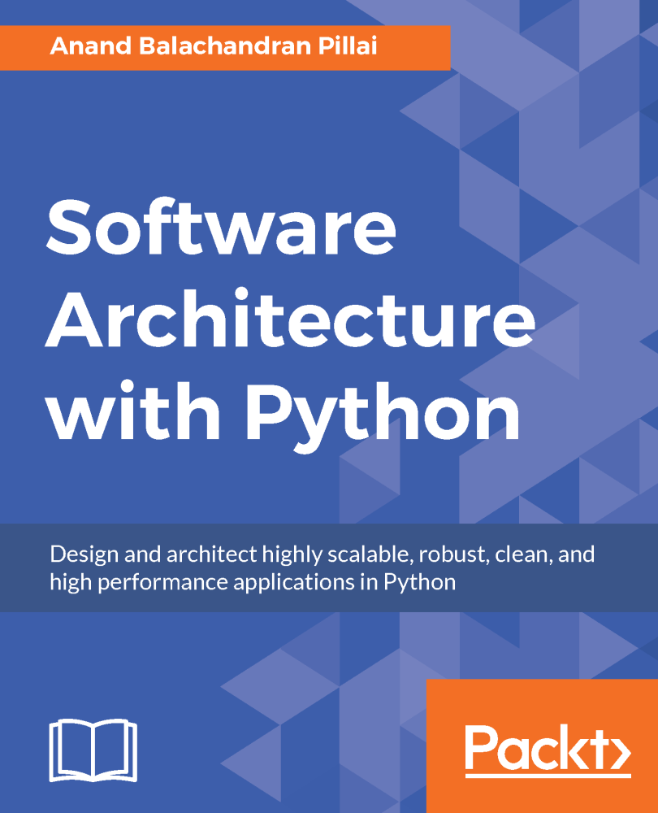
https://www.youtube.com/watch?v=DJtef410XaM
- PyOhio 2014
- Brandon Rhodes
- "The Clean Architecture in Python"
https://en.wikipedia.org/
wiki/Robert_C._Martin
https://8thlight.com/blog/uncle-bob/
2012/08/13/the-clean-architecture.html
2011/09/30/Screaming-Architecture.html
https://en.wikipedia.org/
wiki/The_Mythical_Man-Month
http://www.cs.yale.edu/
homes/perlis-alan/quotes.html
"Epigrams in Programming"
ACM SIGPLAN, September 1982
15. Everything should be built top-down,
except the first time. [perlis]
Weinberg's Second Law:
If builders built buildings the way
programmers wrote programs, then the
first woodpecker that came along would
destroy civilization.
- Background Terminology
- Contrast buildings to software
- Warning signs
- UML Intro / Persuasion
- Design Patterns
- Architecture Patterns
- Python Examples
- lxml, attrs
https://www.merriam-webster.com/
dictionary/architecture
https://en.wikipedia.org/
wiki/Software_architecture
wiki/Cohesion_(computer_science)
wiki/Coupling_(computer_programming)
wiki/Separation_of_mechanism_and_policy
wiki/Separation_of_concerns
http://www.gnu.org/
fun/jokes/pasta.code.html
https://en.wikipedia.org/
wiki/Spaghetti_code
wiki/Spaghetti_code#Lasagna_code
wiki/Spaghetti_code#Ravioli_code
http://www.laputan.org/mud/
Big Ball of Mud
- Hollywood exaggerated
- Blocks only 3-4'
- Unlikely: UFOs, lasers,
sonic levitation
- Possibly: concrete
https://www.nytimes.com/
2008/04/23/world/africa/23iht-pyramid.1.12259608.html
- Probably:
http://www.timetrips.co.uk/
pyramids-factskhufu.htm
- ~20k laborers
- ~13 blocks/hr, 24x7
- Smaller block higher up
Process: - Cut a block of stone - Slide it across the desert - Stack it on top - Repeat. Scalable: - Add people
https://www.nps.gov/whsa/planyourvisit/sledding.htm
https://en.wikipedia.org/
wiki/Seven_Wonders_of_the_Ancient_World
- First of seven to be built
- By nearly 2000 years
- Only survivor of seven
- 4500 years and counting
- 2nd place: ~1500 years
- (3 wonders lost to earthquakes)
Feature List: - Extra Big - Two main chambers - A couple auxiliary chambers - Access tunnels - Sealed entrances Timeline: - 20 years Resources: - National support Change Requests From Customer: - N/A
https://en.wikipedia.org/
wiki/Lincoln_Cathedral
- +3800 years...
- Was 525 feet,
1311 to 1549
(~240 years)
- Now 272 feet.
- 1092 = Initial (small) build
- Fire, earthquake
- 1185-1311 (~125 years)
- Rebuild
- Several expansions
- Experimental techniques
- Pointed arches
- Flying buttresses
- Ribbed vaulting
- ~250 foot tall spire
- 1549 = Spire collapse
- Storm -or-
- Wood frame + lead casing
https://en.wikipedia.org/
wiki/List_of_longest_wooden_ships
wiki/List_of_tallest_wooden_buildings
https://archinect.com/
news/article/149968916/world-s-tallest-wood-building-constructed-in-vancouver
- Brock Commons, Vancouver
- ~175 feet / 18 stories
Thin walls, roof Windows Bigger interior Transition from manual to skilled labor
https://en.wikipedia.org/
wiki/List_of_tallest_buildings_and_structures
wiki/List_of_tallest_buildings (350_m+)
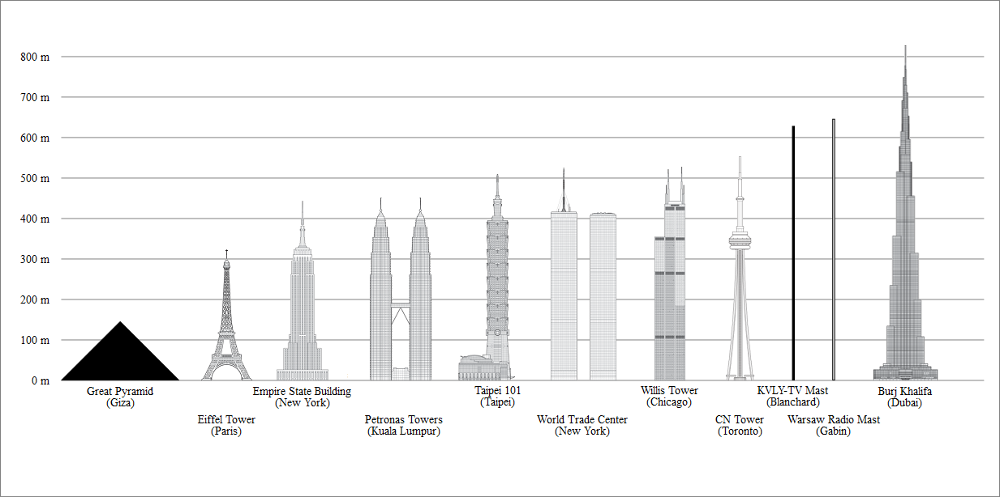
https://en.wikipedia.org/
wiki/Leaning_Tower_of_Pisa
wiki/Millennium_Tower_(San_Francisco)
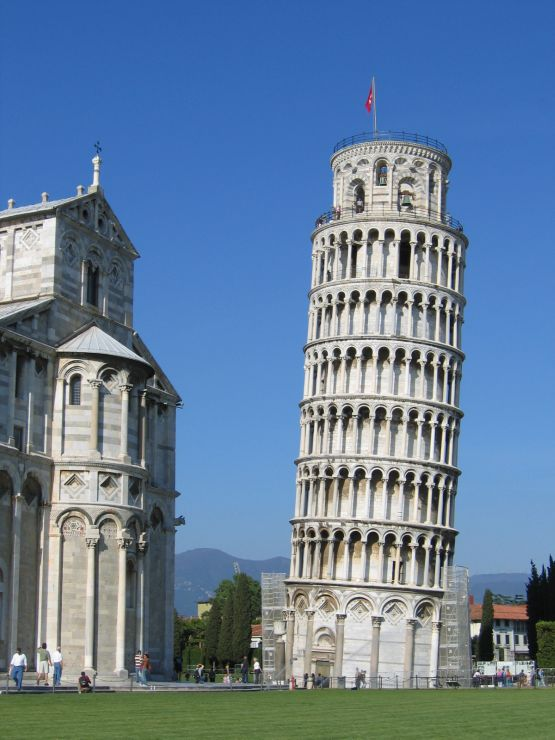
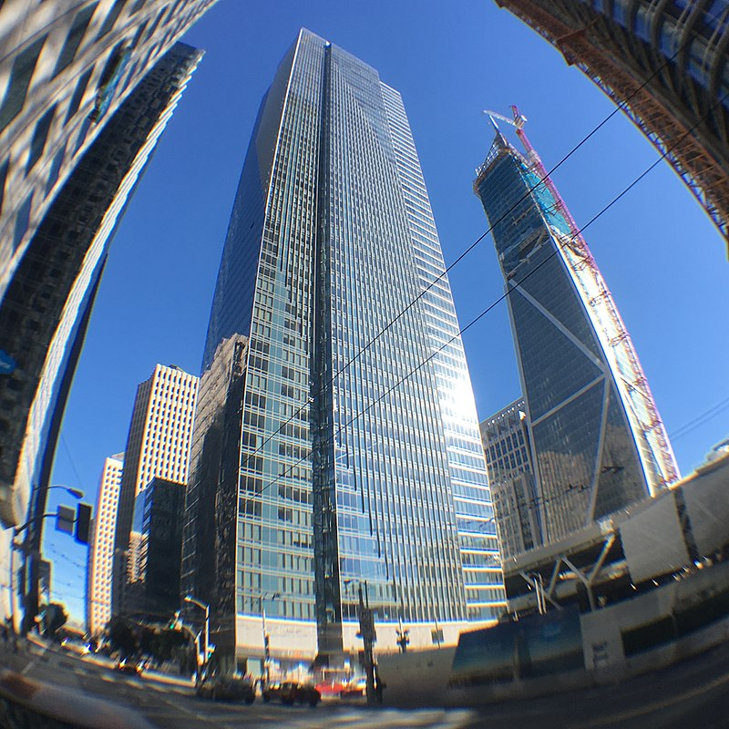
Smaller blocks (bricks) New materials (steel) New fasteners (cement, rivets, welding) Pre-fab (plywood, CLT) Standard dimensions Machinery
Wires (Vacuum Tubes, Logic Units) Assembly Sub-Routines [1952] Fortran [1957], Lisp [1958] Modules Libraries Object Oriented Frameworks [1990s] Service Oriented Architectures [2000s] Clouds, Microservices, IoTs [2010s]
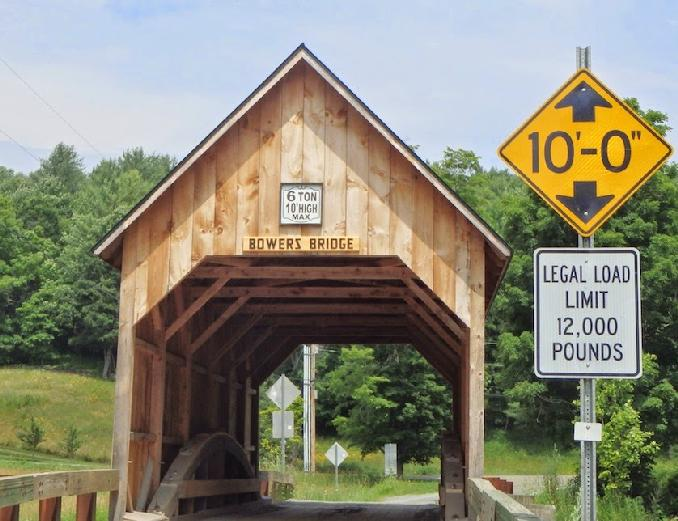
. . . . Standard Designs - Peer Reviewed Equations - Strength of Materials Technical Drawings Permits, Approval Inspections Maintenance Collapse? - Reviews, Fines, Lawsuits
One diagram per type of detail (view): - Framing - Exterior - Interior - Plumbing - Electrical - Network
Start with main() Continue adding functions Maybe reorganize into modules Collapse? - Fix a bug Survivors? - Change nothing
. . . Manager: "Hours = Code = Sales" . . . Ready. Fire! Aim.
Common software metrics: - Lines of code / functions / classes / files - Developer count - Years coding - Budget - Feature count - Performance / Reliability / etc - Cost of failure - Bugs Building metrics: - Height - etc. What about changes? - Pyramid - Cathedral - Skyscraper (framework) Effective project size = Initial build effort + Change effort
| C | C++ | Py | Organization | |
|---|---|---|---|---|
| Tiny | 1k | 300 | 100 | main() |
| Small | 10k | 3k | 1k | Functions |
| Medium | 100k | 30k | 10k | Classes |
| Large | 1M | 300k | 100k | ? |
| Huge | 10M | 3M | 1M | ?? |
Assumptions:
- Complete application
- klocs ~ features
- 3-5x productivity / language level
8. A programming language is low level
when its programs require attention
to the irrelevant. [perlis]
| Py | Brain Capacity Required | |
|---|---|---|
| Tiny | 100 | 100 lines of code |
| Small | 1k | 50 lines (current function)
+ 20 functions |
| Medium | 10k | 20 lines (current method)
+ 10 methods (current class) + 50 classes |
| Large | 100k | ...500 classes? |
| Huge | 1M | ...5000 classes?? |
100x gap...
Architecture of this large project? - Several 100s of classes
| Dev ID | Primary | Secondary | 4+1 Views |
|---|---|---|---|
| 3 | Visio diagram (system state) | UTSL | Logical |
| 3 | Visio diagram (one exe) | UTSL | Development |
| Physical | |||
| 2 | UTSL | Live sketches (one exe) | Process |
| 1 | Live stories of features, bugs, etc. | n/a | +Scenarios |
Issues: - Different thought processes - Little written down - Various notations - Low code coverage SDD - Software Design Document - ~1000 pages - (After assimilation by Big Corp)
- Code to pictures
- Classes and methods and properties
- DRY?
- Small/medium project complexity
https://msdn.microsoft.com/
en-us/library/dd409437.aspx
Earliest maps: Perfect detail
Later: Utility over accuracy
.
.
.
https://martinfowler.com/
articles/designDead.html
Verification vs Validation
Do what's useful:
- Rough overview
- Starting new project
- Documenting old project
- Fill in details later
- May not need all diagram types
https://en.wikipedia.org/
wiki/4+1_architectural_view_model
wiki/Category:Unified_Modeling_Language_diagrams
| View | Goal |
|---|---|
| Logical | Classes, inheritance, composition |
| Development | Object hierarchies, connected interfaces |
| Physical | Software, hardware, networks |
| Process | Internal activities |
| Scenarios | [Use Cases] |
19. A language that doesn't affect the way
you think about programming, is not worth
knowing. [perlis]
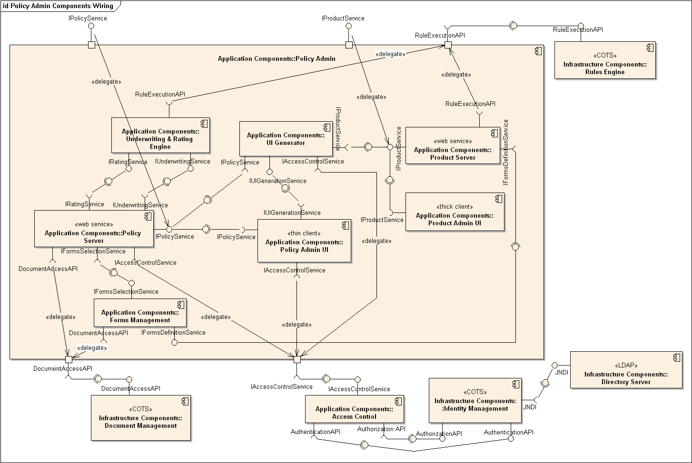
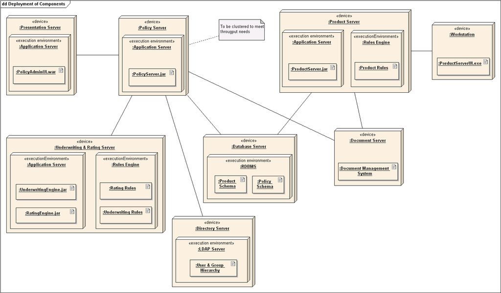
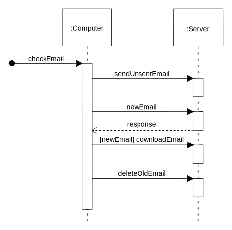
Background thread to read from camera - Continuous I/O incompatible with GIL Not sure what works / best practice - Python has threading - C has pthreads - Portable mix?
// Get the current counter value
static int count;
static
PyObject *
uv4l2_gimme(
PyObject *self,
PyObject *args
)
{
return PyLong_FromLong(count);
}
// Run for 10 seconds w/o the GIL,
// updating counter value once/sec
static
PyObject *
uv4l2_count(
PyObject *self,
PyObject *args
)
{
Py_BEGIN_ALLOW_THREADS;
for (int k = 0; k < 10; k++) {
count++;
sleep(1);
}
Py_END_ALLOW_THREADS;
Py_INCREF(Py_None);
return Py_None;
}
# Background task thread function
import _uv4l2
done = False
def background_fun():
global done
print('Background counter begins...')
_uv4l2.count()
print('Background counter done!')
done = True
return
# Start the background task,
# print the counter value when it changes.
def background_test():
bg = threading.Thread(target=background_fun)
bg.start()
c = None
while not done:
n = _uv4l2.gimme()
if n != c:
print(n)
c = n
bg.join()
return
background_test()
$ ./thread-test.py Background counter begins... 0 1 2 3 4 5 6 7 8 9 10 Background counter done!
from app.libmessage import SocketPair
import app.cncui.application
import app.cncwdog.application
import app.cncmgr.application
import app.cncio.application
def main(args):
opts = None #argparse...
ui_wd = SocketPair()
ui_mgr = SocketPair()
cpid = os.fork()
if cpid != 0:
# First process runs the UI in the foreground:
print(f'PID: {os.getpid():5} = cncui')
sys.stdout.flush()
return run(app.cncui.application.Application,
opts,
ui_wd.end_a(),
ui_mgr.end_a(),
#debug=True
)
# First child (eventual wdog) can be a daemon:
os.setsid()
mgr_wd = SocketPair()
mgr_io = SocketPair()
cpid = os.fork()
if cpid == 0:
print(f'PID: {os.getpid():5} = cncmgr')
sys.stdout.flush()
del ui_wd
return run(app.cncmgr.application.Application,
opts,
mgr_wd.end_a(),
ui_mgr.end_b(),
mgr_io.end_a())
io_wd = SocketPair()
cpid = os.fork()
if cpid == 0:
print(f'PID: {os.getpid():5} = cncio')
sys.stdout.flush()
del ui_wd
del mgr_wd
return run(app.cncio.application.Application,
opts,
io_wd.end_a(),
mgr_io.end_b())
print(f'PID: {os.getpid():5} = cncwdog ')
sys.stdout.flush()
return run(app.cncwdog.application.Application,
opts,
ui_wd.end_b(),
mgr_wd.end_b(),
io_wd.end_b())
Component Diagram: Application Processes
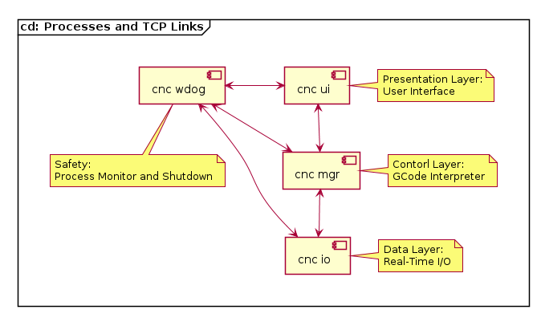
Sequence Diagram: Process Launch
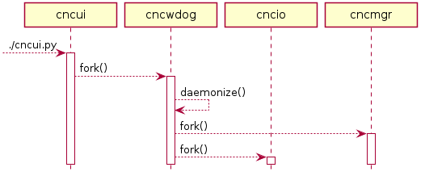
39. Re graphics: A picture is worth 10K words
- but only those to describe the picture.
Hardly any sets of 10K words can be
adequately described with pictures.
[perlis]
https://en.wikipedia.org/
wiki/A_picture_is_worth_a_thousand_words
"One showing is worth a hundred sayings"
Pick a project
Create Diagrams
- Whiteboard + phone camera
- Favorite drawing program
- PlantUML (sequence diagrams)
- tgif
Print and display
https://en.wikipedia.org/
wiki/List_of_Unified_Modeling_Language_tools
https://www.google.com/search?q=uml+cheat+sheet
https://en.wikipedia.org/
wiki/Software_design_pattern
- "Gang of Four" book
- "Python doesn't need design patterns"
- Language features
- Please note in comments
https://en.wikipedia.org/
wiki/Adapter_pattern
- Create an object containing one object
- Change method names/parameters
- Adapt old class to new interface
- Adapt new class to old interface
- Useful for refactoring
https://en.wikipedia.org/
wiki/Facade_pattern
- Create an object containing many objects
- Simplified interface
- Domain specific API
- Divide and conquer
| Pyramid | Skyscraper | |
|---|---|---|
| Design | Easy | Planning |
| Build | Simple | Framework |
| Change | Harder | Easier |
| Until | Too many blocks | Too many layers |
| Anti-Pattern | Ravioli | Lasagna |


Standard?
Useful starting points
YMMV.
https://en.wikipedia.org/
wiki/Beijing_National_Stadium
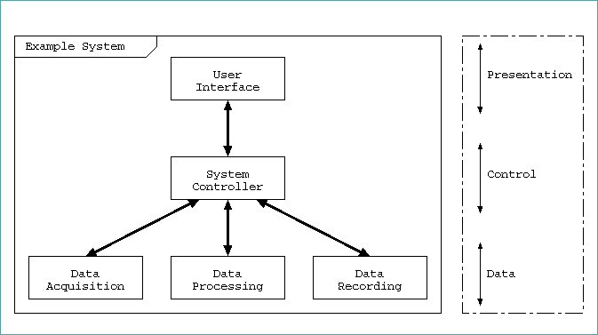
https://en.wikipedia.org/
wiki/Multitier_architecture
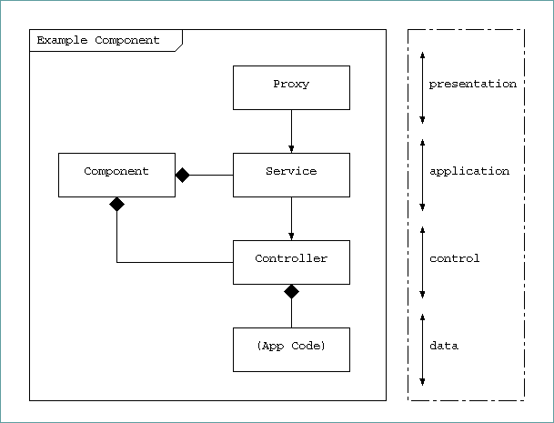
Separation of Concerns: - Build the component - Remote Access - Public Interface - Policy - Mechanism
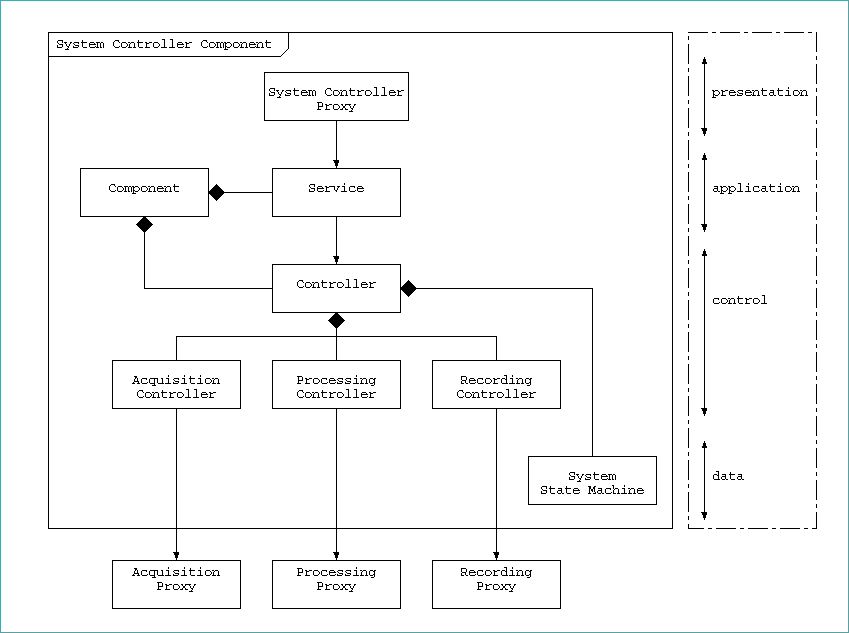
- Controller facade - Proxies provided by callee - State Machine is data?
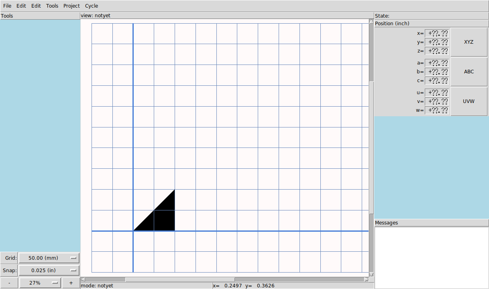
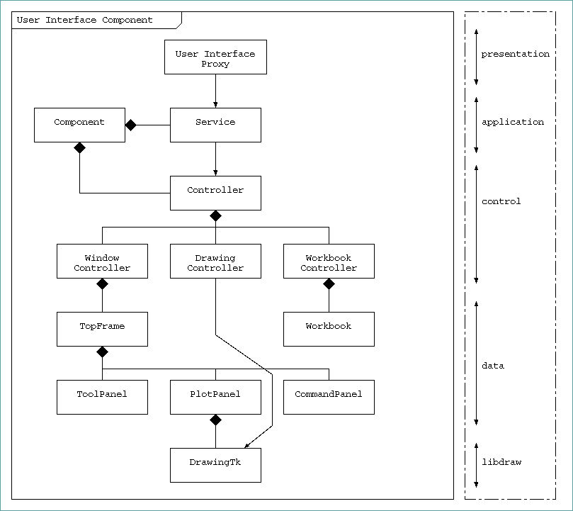
https://en.wikipedia.org/
wiki/Model-view-viewmodel
wiki/Model-view-presenter
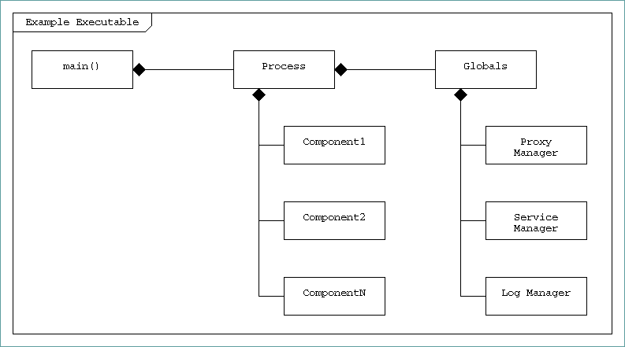
- Pyramid / DAG / Tree - Parent to children - Facade / encapsulate - Child to parent - OK within layer - Interface for higher layer - Minimal peer knowledge - Coordinate via parent
Presentation - Provide a Proxy - Consumed by other components - Consumed via loopback Application - Process - Create Managers, Components - Service - Facade for Component - AuthZ and Accounting - Requests handed to Component - Component - Create rest of the child objects - Main thread processes requests Control - Facade for implementation - Coordinate lower pieces - Synchronization / Locking Data - Implementation details - Unit Tested
Organize stuff into a package
- classes (OK)
- singletons (maybe)
- data (never)
Nestable
- (optional) top-level app
- component
- layer
UML Package = Python namespace
>>> import this
"Namespaces are one honking great idea --
let's do more of those!"
"Flat is better than nested."
- control/__init__.py
- Relative-import public classes:
from .topframe import TopFrame
- control.py
- Syntactically valid hacks...
class data:
class TopFrame:
pass
Package diagram:
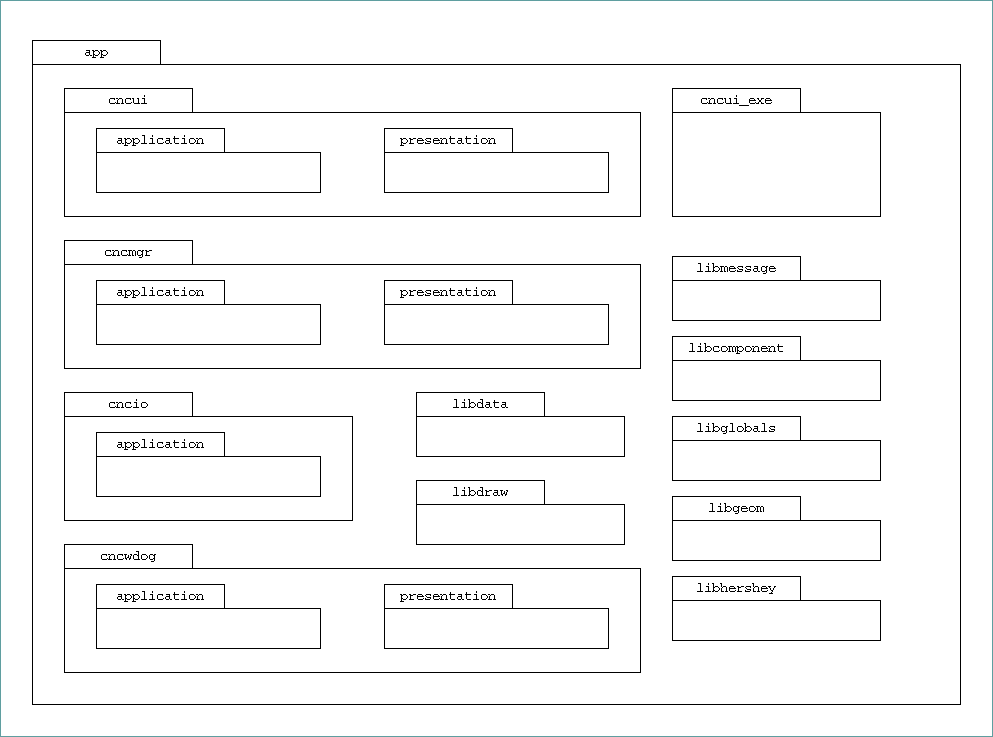
System Layers 3x - 5x Components 1x - 20x Component Layers 3x - 5x Facades 1x - 20x Libraries 1x - 5x System of Systems 1x - 20x Product: 9x - 1_000_000x
http://www.attrs.org/
$ pip install attrs
http://www.attrs.org/en/stable/why.html
- tuples?
- namedtuples?
- dict?
- pep-0557 (Python 3.7 Data Classes)?
Messaging styles:
- Small program: series of commands
- Large program: single document
11. If you have a procedure with ten
parameters, you probably missed some.
[perlis]
The Clean Architecture:
"Typically the data that crosses the
boundaries is simple data structures"
The Cathedral and The Bazaar:
"Smart data structures and dumb code
works a lot better than the other way
around."
The Art of Unix Programming:
"Rule of Representation: Fold knowledge
into data so program logic can be stupid
and robust."
##
## app.cncui.presentation.messages
##
from ...libgeom import Point
import enum
#@enum_xml('coord-frame')
class CoordinateFrame(enum.IntFlag):
WORLD = 1
DRAWING = 2
CANVAS = 3
#@attr_xml('drawing-zoom-bigger')
@attr.s(slots=True, frozen=True)
class DrawingZoomHere:
bigger : bool = attr.ib(default=True)
cf : CoordinateFrame = attr.ib(default=CoordinateFrame.WORLD)
Pu : Point = attr.ib(default=None)
Pv : Point = attr.ib(default=None)
##
## app.cncui.presentation.proxy
##
from . import messages
class Proxy:
def drawing_zoom_here(self, data=None, **fields):
if data is None:
data = messages.DrawingZoomHere(**fields)
else:
assert isinstance(data, messages.DrawingZoomHere)
return self._client.send_data(data)
Benefits: - Type verified at origin (by Proxy) - Immutable in transit - Single object (message) in transit - **fields for explicit readability - Receiving Controller: - Examines type - Process or route down And also: - Type coercion - Add methods - Factory methods - Dunder methods (repr, compare)
http://lxml.de/ $ pip install lxml Facade for common uses:
##
## xmlutil.py
##
from contextlib import contextmanager
from lxml import etree
def str_from_etree(node, pretty_print=True):
return etree.tostring(node,
pretty_print=pretty_print,
method='xml', # full document
encoding='unicode') # str, not bytes.
def etree_from_str(s):
e = etree.XML(s)
return e
def etree_from_file(fobj):
e = etree.parse(fobj)
return e
def etree_from_filename(fname):
with open(fname, 'b') as f:
e = etree_from_file(f)
return e
def subelement(p, tag, **attrs):
c = etree.SubElement(p, tag, **attrs)
return c
@contextmanager
def subcontext(p, tag, **attrs):
c = etree.SubElement(p, tag, **attrs)
yield c
Convert common data types to XML, as well as attrs decorated classes:
##
## attrutil.py -- Encoding to XML...
##
class DataEncoder:
def _none(self, x):
e = etree.Element('none')
return e
def _bool(self, x):
e = etree.Element('bool')
e.text = str(x)
return e
def _dict(self, x):
e = etree.Element('dict')
for key, val in x.items():
with xmlutil.subcontext(e, 'dict-item') as pair:
with xmlutil.subcontext(pair, 'dict-key') as ek:
k = self.etree_from_data(key)
ek.append(k)
with xmlutil.subcontext(pair, 'dict-value') as ev:
v = self.etree_from_data(val)
ev.append(v)
return e
def __init__(self):
self._simple_tab = {
type(None) : self._none,
bool : self._bool,
dict : self._dict,
enum.Flag : self._flag,
enum.Enum : self._enum,
float : self._float,
int : self._int,
list : self._list,
str : self._str,
tuple : self._tuple,
}
return
def etree_from_data(self, data):
if hasattr(data, '_xml_dump'):
return data._xml_dump(e)
if attr.has(data):
return self._with_attrs(data)
t = type(data)
f = self._simple_tab.get(t, None)
if f is not None:
return f(data)
for t, f in self._simple_tab.items():
if isinstance(data, t):
return f(data)
return self.default(data)
def etree_from_args(_elm, *args):
return etree_from_data(list(args), _elm)
def etree_from_kwargs(_elm, **kwargs):
return etree_from_data(kwargs, _elm)
Convert common data types from XML, as well as attrs decorated classes:
##
## attrutil.py -- Decoding from XML...
##
_attr_tab = { }
def attr_xml(tag):
def decorate(cls):
setattr(cls, '_xml_tag', tag)
if tag in _attr_tab:
raise KeyError(f'Duplicate tag ({tag}).')
_attr_tab[tag] = cls
return cls
return decorate
class DataDecoder:
def _none(self, e):
return None
def _bool(self, e):
value = elm.text.strip().lower()
if value in ( 't', 'true', '1', 'y', 'yes' ):
return True
if value in ( 'f', 'false', '0', 'n', 'no' ):
return False
raise ValueError(f'Invalid bool: {value}')
def _dict(self, e):
d = { }
for i in e:
k, v = i
key = self.data_from_etree(k[0])
value = self.data_from_etree(v[0])
d[key] = value
return d
def __init__(self):
self._simple_tab = dict(
none = self._none,
bool = self._bool,
dict = self._dict,
enum = self._enum,
float = self._float,
int = self._int,
list = self._list,
str = self._str,
tuple = self._tuple,
)
return
def data_from_etree(self, elm):
tag = elm.tag
f = self._simple_tab.get(tag, None)
if f is not None:
return f(elm)
return self.default(elm)
Example using DataEncoder by Client sending message to Server:
##
## app.libmessage.client
##
from ..libdata.attrutil import DataEncoder
from ..libdata.xmlutil import str_from_etree
class Client:
def send_data(self, data):
elm = self._encoder.etree_from_data(data)
return self.send_etree(elm)
def send_etree(self, elm):
s = str_from_etree(elm)
self._queue.put(s)
return
Example using DataDecoder by Dispatcher for message received by a Server:
##
## app.libmessage.dispatcher
##
from ..libdata.attrutil import DataDecoder
from ..libdata.xmlutil import etree_from_str
class Dispatcher:
def process_message(self, blocking=False):
if not blocking and self._queue.qsize() == 0:
return False
try:
s = self._queue.get(timeout=0.200)
except queue.Empty:
return False
#try:
elm = etree_from_str(s)
data = self._decoder.data_from_etree(elm)
self._service.input_message(data)
return True